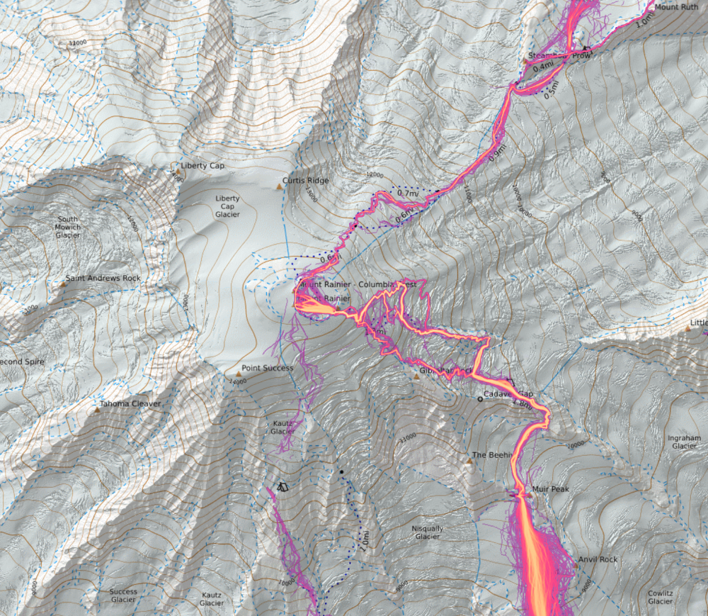
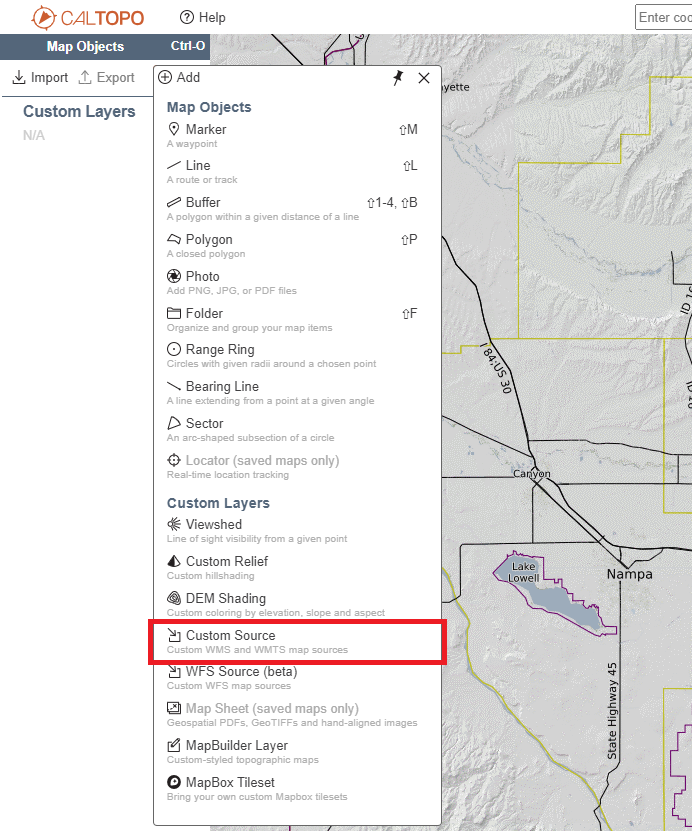
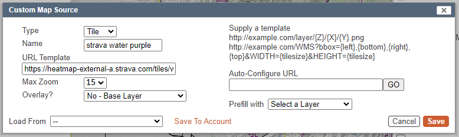
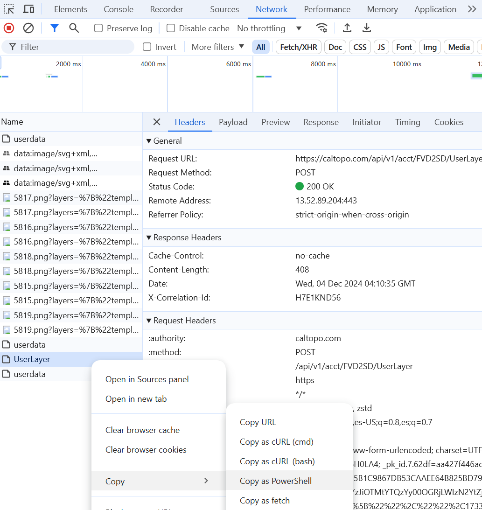
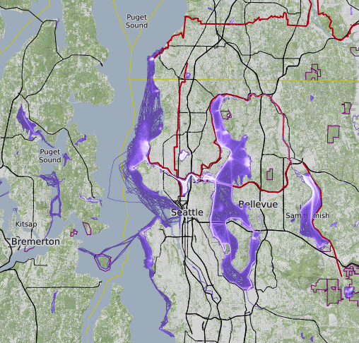
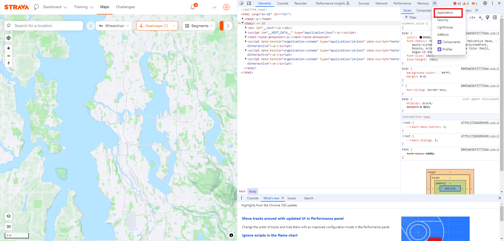
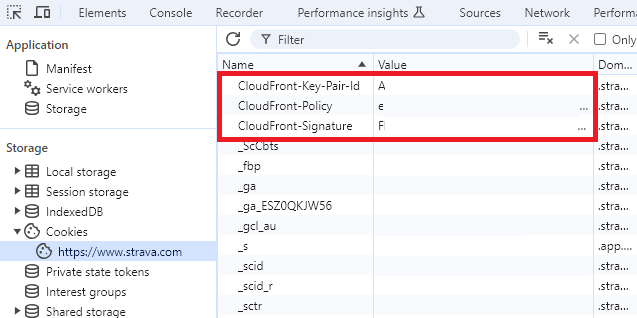
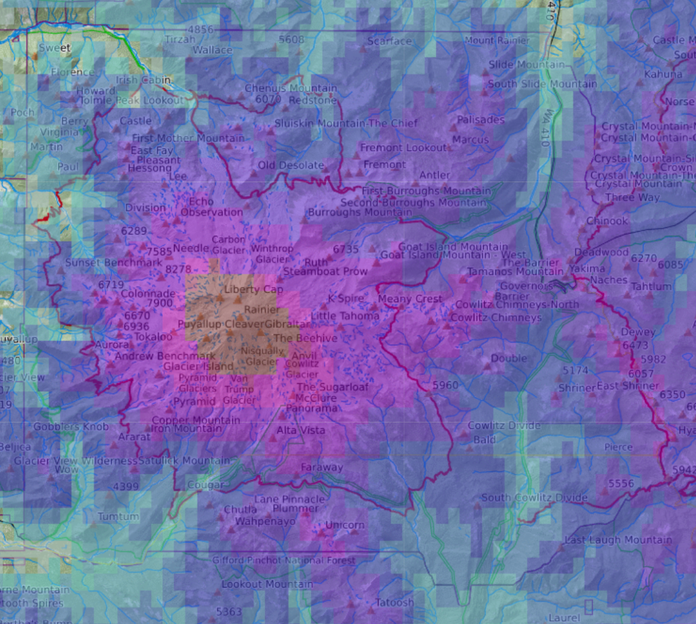

Introduction
The strava heatmap is an excellent tool for planning routes both in the city and the woods. By showing how frequently a certain trail or road segment is used by people running or hiking, you can get some idea of how easy it is to travel. However, on Strava's own website, the heatmap can only be laid over a handful of Mapbox map layers. Tools like CalTopo, on the other hand allow you to layer many different maps from many different sources. From this guide, you can learn various methods for showing the Strava heatmap in CalTopo.

The strava heatmap for on-foot activities overlaid on top of CalTopo's MapBuilder map.
Prior to March 2025, sending authentication tokens to strava in query parameters was supported by their API, so it was possible build a URL to define a custom layer in CalTopo. Now, cookies must be used for authentication, which CalTopo does not forward. Instead of one unified method, this guide now discusses three alternate approaches, each with their own advantages and drawbacks. The methods in this guide are summarized in the table below.
| Method | Complexity | Max Zoom Level | CalTopo Pro | Strava Account | Printing | Drawing |
|---|---|---|---|---|---|---|
| Browser Extension | Low | 15 | Required | Not Supported | Supported | |
| Unauthenticated Layer | Medium | 11 | Required | Supported | Not Supported | |
| Proxy Server | High | 15 | Required | Required | Supported | Not Supported |
Browser Extension
This is the simplest method, as well as the only one that supports drawing lines based on the Strava heat and the only one that does not require a CalTopo Pro account. Its main drawback is that it does not support including the Strava heatmap layer in a PDF exported/printed from CalTopo. A Strava account is required.
Unauthenticated Layer
This is the simplest method that supports exporting/printing the Strava heatmap layers in a PDF, as well as the only method that does not require a Strava account. Its principle downside is that it only support low-resolution tiles down to zoom level 11. It does not support drawing lines based on the Strava heat. A CalTopo pro account is required to define custom layers.
In this method, you define a custom layer in CalTopo that points to Strava's unauthenticated API for low-resolution heatmap tiles.
Building the URL Template
The main component of a custom layer source in CalTopo is the URL template. The template describes the URL that CalTopo will use to request map tiles from the Strava server and how to modify those URLs based on the map position and zoom level. The URL template will look something like this:
https://heatmap-external-a.strava.com/tiles/all/hot/{Z}/{X}/{Y}.png
This form can be used the generate the URL template based on several input parameters. Once you're ready, use the "Copy" button to copy your URL template into your clipboard for use in CalTopo. Later subsections explain what each parameter means & does and how to build the URL template manually. The map below the form shows a preview of the heatmap layer on top of an OpenStreetMap base.
https://heatmap-external-a.strava.com/tiles/all/hot/{Z}/{X}/{Y}.png
Changing the activities
By replacing the URL path part after tiles,
you can limit the set of activities that are considered when building the heatmap.
The following activity options can be used:
all: all activities-
run: all foot sport activities (Run, Trail Run, Walk, Hike). The name is misleading for historical reasons.sport_Run: just "Run" activitiessport_TrailRun: just "Trail Run" activitiessport_Walksport_Hike
-
ride: all cycle activities (those listed below)sport_Ridesport_MountainBikeRidesport_GravelRidesport_EBikeRidesport_EMountainBikeRidesport_Velomobile
-
water: all water activities (those listed below)sport_Canoeingsport_Kayakingsport_Kitesurfsport_Rowingsport_Sailsport_StandUpPaddlingsport_Surfingsport_Swimsport_Windsurf
-
winter: all winter activities (those listed below)sport_AlpineSkisport_BackcountrySkisport_IceSkatesport_NordicSkisport_Snowboardsport_Snowshoe
sport_Badmintonsport_Basketballsport_Cricketsport_Dancesport_Golfsport_Handcyclesport_InlineSkatesport_Padelsport_PhysicalTherapysport_Pickleballsport_RockClimbingsport_RollerSkisport_Skateboardsport_Soccersport_Tennissport_Volleyballsport_Wheelchair
Changing the color
The next URL path part describes the color style to use. Strava heatmap comes in 6 different color styles.
mobilebluegrayblueredhotpurpleorange
Defining the layer in CalTopo
Now that you have your URL template, you can define the layer in CalTopo. From the "Add" menu, select "Custom Source".

In the form dialog that pops up, leave the "Type" as "Tile". Give the layer a name to identify it in the "Name" field. Paste your URL template into the box labeled "URL Template".

Max Zoom
Ideally, the "Max Zoom" for the unauthenticated heat map should be set to 11, but the CalTopo UI does not allow it to be set lower than 12. As a result, the unpaid heat map will disappear if you zoom in beyond level 11. See the following section 'Setting a "Max Zoom" level not supported by the UI' for complicated instructions to overcome this limitation.
Advanced: Setting a "Max Zoom" level not supported by the UI
- Fill out the "Custom Source" form
- Open your browser dev tools (such as by pressing F12)
- Navigate to the dev tools' "Network" tab
- Click "Save to Account" in the "Custom Source" form
- In the dev tools, find the "UserLayer" request and copy it as a PowerShell command (or your chosen shell)
- Paste the command into a text editor
- In the command, replace the "12" (if you submitted the form with "Max Zoom" set to 12) that follows
maxzoom%2522%253A%2522with an "11". - You can find the "Title" in the request body, too, and replace it with something distinct if you want to be able to identify it as different from the layer you just saved to your account.
- Paste the command into PowerShell (or your chosen shell) and execute it
- Refresh your CalTopo page to discover the updated or new layer in your account

Overlay?
Set "Overlay?" based on whether you want to define an overlay or a base layer. I prefer to define a base layer so that I can adjust its transparency to any value. If you'd rather have the transparency locked in but be able to easily toggle the layer with a checkbox, choose "Yes".
The right half of the form can be left blank. Click "Save". Your layer will be added to your map. I chose a purple heatmap of water sport activities. In Seattle, this means that the entire West (Puget Sound) coast of the city as well as Lakes Washington, Sammamish, Union and Green Lake are covered. Particular hot spots show up around downtown Kirkland, Marymoor Park, Golden Gardens, and other popular locations for water sports.

Proxy Server
This is the most complicated method. It can give you high-resolution tiles that can be included in a printed PDF. The main downside is that it requires a significant amount of software engineering, a CalTopo Pro account, and a Strava account. It does not support drawing lines based on the Strava heat.
Without an account, Strava only offers a heatmap that can be used up to zoom level 11. If you do have an account, follow the instructions below to configure a better resolution heatmap that you can use down to level 15 (about the level that makes Green Lake fill a computer screen).
In this method, you would set up a proxy server that can attach your strava auth cookies and make requests to Strava using them, and then forward the result back to the requester (in this case, CalTopo's layer server). I have not tried this myself, but there are some things that would be helpful to know if you were going to.
Authenticated API Base URL
The base URL for the authenticated endpoint is:
https://content-a.strava.com/identified/globalheat/{activity}/{color}/{Z}/{X}/{Y}.png
Getting your Strava cookies
The instructions below are written for Google Chrome, and probably translate well to Microsoft Edge. If you use Firefox, Safari, or something else, you may have to make some adjustments, but the basic process is the same.
- Go to strava.com/maps.
- Open your browser's developer tools (such as by hitting your F12 key).
-
Navigate to the "Application" tab (it might be hidden under a "More" arrow).

- From here, under "Storage", find the "Cookies" for "https://www.strava.com".
-
The cookies that you would need to send in your tile requests are the three whose names start with "CloudFront" and the cookie named
"_strava_idcf":

Note: your CloudFront-Signature changes weekly, and your _strava_idcf cookie may also
expire, so you will have to update these values if your map stops working.
Grayscale Tiles
In October 2026, Strava began using a "grayscale" color path parameter in their frontend. Their UI applies different color styles to these before showing them on the map. If Strava eventually retires the individual color path parameters in favor of the "grayscale" one, your proxy server would have to apply styles before forwarding the result to CalTopo. See this issue for more details.
Bonus: NOAA Snow Depth Layer
The NOAA NOHRSC Snow Depth map can also be added as a custom overlay. Use the type "WMS" and the following URL Template:
https://mapservices.weather.noaa.gov/raster/rest/services/snow/NOHRSC_Snow_Analysis/MapServer/export?dpi=96&transparent=true&format=png32&bbox={left},{bottom},{right},{top}&bboxSR=EPSG:4269&imageSR=102100&size={tilesize},{tilesize}&f=image&layers=show:3
The legend for the layer is found on this page under "Image (3)". Units are in inches.
